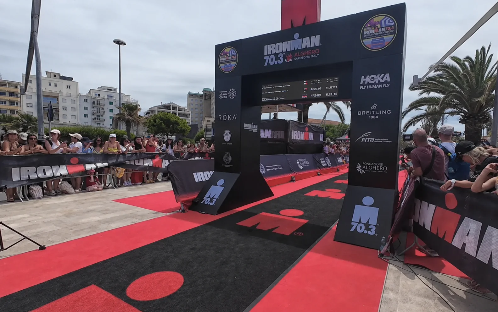
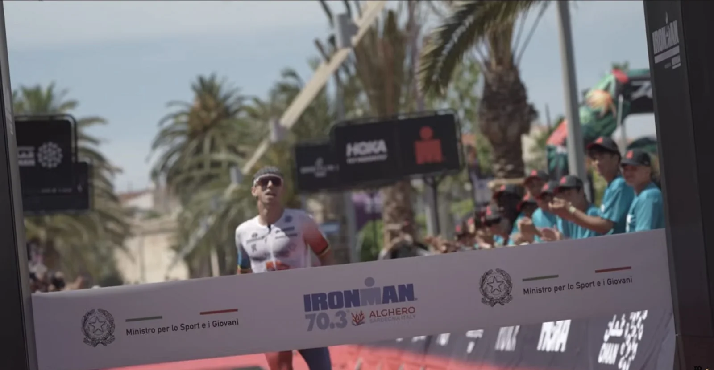

IRONMAN 70.3 Alghero 2027 date, course and where to stay
Sport, sea and triathlon on the Riviera del Corallo: a practical guide for athletes, supporters and guests looking for a holiday apartment in Alghero.
In 2027, Alghero will once again host one of the most anticipated international sporting events in northern Sardinia: IRONMAN 70.3 Alghero, scheduled for Sunday, 30 May 2027.
After the event’s debut in the city, it is another chance to experience Alghero in a special way: not only as a seaside holiday destination, but also as a natural setting for outdoor sport, triathlon and active travel.
For athletes, supporters and visitors, IRONMAN 70.3 Alghero will be more than a race: it will be a weekend of sea, historic streets, nature, sporting energy and some of the most beautiful landscapes of the Riviera del Corallo.
This is not the official event page. The date of 30 May 2027 is listed on the official IRONMAN page; for registration, rules, schedule, start times and operational details, always check the official IRONMAN 70.3 Alghero website.
The IRONMAN 70.3 Alghero course
Alghero offers a natural setting that suits a race of this level: clear water, a panoramic coastline, roads surrounded by Mediterranean vegetation and a historic centre overlooking the sea.
Swim: 1.9 km in the Riviera del Corallo
The swim takes place in the waters of the Riviera del Corallo, with the sea of Alghero as the backdrop. The city’s coastline is scenic, close to the centre and easy for spectators to reach.
For anyone staying in Alghero during the event, this is one of the most exciting parts to watch: the start, the athletes coming out of the water and the energy of the crowd make it a memorable moment.
Bike: 90 km between coast, nature and Capo Caccia
The bike leg is one of the most striking parts of IRONMAN 70.3 Alghero. The route crosses some of the area’s most beautiful landscapes, with scenic sections towards the coast, Porto Conte Natural Park and the Capo Caccia area.
For athletes, it is both technical and spectacular. For supporters following the race, it is also a way to discover an authentic corner of north-west Sardinia, with sea views, cliffs, Mediterranean vegetation and panoramic roads.

Run: 21.1 km along the seafront and historic centre
The final half marathon takes athletes along one of Alghero’s most beautiful stretches: the seafront, the harbour area, the old walls and the streets close to the historic centre.
This is where the race also becomes a city celebration. Spectators can follow the athletes from different points, walk between the centre and the sea, stop at bars and restaurants and enjoy the atmosphere without needing to move far.

Why IRONMAN 70.3 Alghero is a special event
IRONMAN 70.3 Alghero connects sport and place in a very natural way. The city is not just where the race happens: it is part of the experience, with the sea, the historic centre, the seafront and the coastal landscape shaping the whole weekend.
The event is also interesting for people who are not racing. Supporters, friends and families can enjoy a complete stay, combining the competition with beaches, walks, food and time to explore Alghero and its surroundings.
What to see in Alghero during the event weekend
If you come to race or to support someone taking part, you can use the weekend to discover some of the city’s most distinctive places and coastal landscapes:
- the historic centre of Alghero, with its walls, towers and sea-facing bastions;
- San Giovanni Beach and the long seafront promenade;
- Maria Pia, with its pale sand and pine forest;
- Porto Conte Natural Park and the Capo Caccia area;
- Neptune’s Grotto, one of the best-known excursions near Alghero;
- the beaches of Alghero, including Mugoni, Le Bombarde and Lazzaretto.
To plan your stay, you can also read the guide to what to see in Alghero, the page about the beaches of Alghero and the selection of places where to eat in Alghero.
Where to stay in Alghero for IRONMAN 70.3
Venerdì House is a holiday apartment in Alghero, in a convenient area for enjoying the city, the sea and the atmosphere of the event. The apartment is about 100 metres from Lido San Giovanni Beach and makes it easy to reach the seafront, the historic centre and the main areas visitors usually need during a stay in Alghero.
For an athlete, it can be useful to have a quiet base with a kitchen, indoor space and everyday services nearby. For supporters, the Lido area makes it easier to combine the event, the beach, seafront walks and evenings in town without turning every move into a plan.
If you are travelling with a bike and race gear
Before booking, always check space, transport arrangements, bike storage options and condominium rules. Venerdì House offers comfortable indoor spaces, but any specific sporting needs should be discussed in advance.
Close to the beach
About 100 metres from Lido San Giovanni, practical for walks, easy days and a lighter pace before or after the event.
Services nearby
Bars, supermarkets and restaurants are close at hand: a real advantage when timing matters.
A practical apartment
80 sqm, 2 bedrooms, equipped kitchen, Wi-Fi, air conditioning and lift: a simple, comfortable base in Alghero.
FAQ - IRONMAN 70.3 Alghero 2027
When is IRONMAN 70.3 Alghero 2027?
The official IRONMAN page lists IRONMAN 70.3 Alghero 2027 for Sunday, 30 May 2027. Race schedule, registration, rules and operational details should always be checked on the official IRONMAN website.
Where should I stay in Alghero for IRONMAN 70.3?
The Lido San Giovanni area is a practical choice because it is close to the beach, services, the seafront and the historic centre. Venerdì House is about 100 metres from Lido San Giovanni Beach.
What are the IRONMAN 70.3 race distances?
The race includes a 1.9 km swim, a 90 km bike course and a 21.1 km run.
Is Venerdì House suitable for athletes and supporters?
Yes. The apartment offers 80 sqm, 2 bedrooms, an equipped kitchen, Wi-Fi, air conditioning and a lift, making it suitable for couples, families and small groups looking for a convenient base in Alghero.
Should I book early for IRONMAN 70.3 Alghero?
Yes. Demand for accommodation can increase during major sporting events, so it is better to plan ahead and check availability and conditions directly with the property.
What can supporters do during the stay?
Supporters can enjoy Alghero’s beaches, historic centre, restaurants, seafront walks and nearby day trips, without needing to move far from the main areas of the city.
Discover also

The beaches of Alghero
Discover the most beautiful beaches in Alghero and choose where to go to the sea during your stay.
Learn more
What to see in Alghero
A practical guide to Alghero, from the old town and museums to archaeology and nature, even in just 1 or 2 days.
Learn more
Where to eat in Alghero
Restaurants recommended by Venerdì House, from seafood and local dishes to practical places for an easy evening.
Learn more
Venerdì House gallery
Explore the rooms and details of the apartment through the photo gallery of Venerdì House.
Learn more